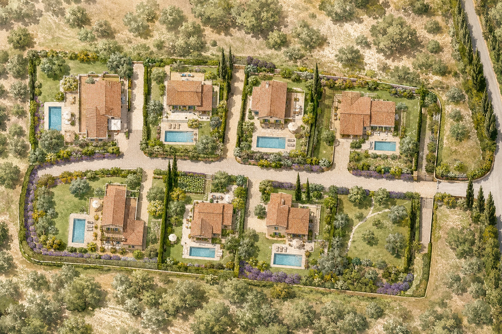

Galerie
Photographies drone réelles · Visualisations du projet · Art de vivre en Provence
Le terrain photographié par drone en mai 2026, et des projections illustratives du site aménagé.
Photos aériennes réelles et visualisations non contractuelles.

7 876 m² au cœur des collines
Une emprise d'un seul tenant, bordée d'arbres, ouverte sur la plaine d'Aix. C'est ici que chaque acquéreur pourra faire construire sa maison, dans son propre jardin, sur un terrain viabilisé prêt à bâtir.


Photographies aériennes réelles du terrain, prises par drone en mai 2026. Aucune retouche d'aménagement.


Nichées dans les collines
Ces volumes imaginés s'inscrivent dans le paysage : toitures de tuiles, oliviers, cyprès et restanques. Une intégration paysagère pensée pour préserver l'esprit des lieux, à titre d'illustration.


Visualisations générées par ordinateur, à titre d'illustration. Les constructions réelles dépendent du projet de chaque acquéreur, dans le respect du règlement de lotissement.

Les longs déjeuners à l'ombre de la treille
La table dressée sous la glycine, les enfants à la piscine, le chant des cigales. Un quotidien où chaque journée a le goût des vacances, sur le terrain que vous aurez choisi.

Images d'ambiance et projections générées par ordinateur, à titre d'illustration. Aucune construction n'existe à ce jour sur le terrain.

Architecture provençale contemporaine
Enduits clairs, tuiles canal, menuiseries bois : le vocabulaire intemporel de la Provence, réinterprété avec sobriété autour d'une piscine et de son jardin.

Le séjour, ouvert sur le jardin
Poutres apparentes, sol en pierre, immenses baies coulissantes : l'intérieur dialogue avec la terrasse et la piscine. La lumière du Sud entre à flots.
Visualisations d'intérieur générées par ordinateur, à titre d'illustration.


De ces images à votre adresse
Huit terrains à bâtir viabilisés, de 500 à 1 133 m², prêts à accueillir le projet de chaque acquéreur. Réservez une visite du site ou recevez le dossier complet du Clos des Zinnias.